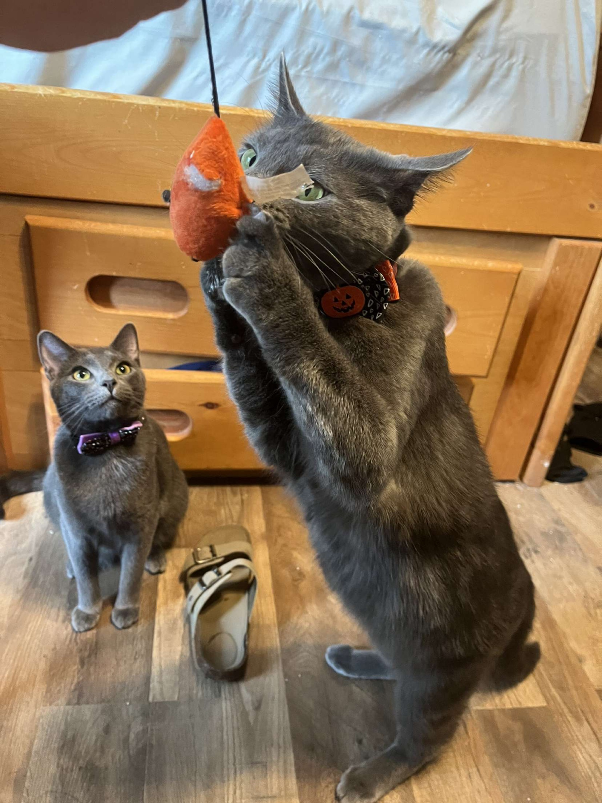
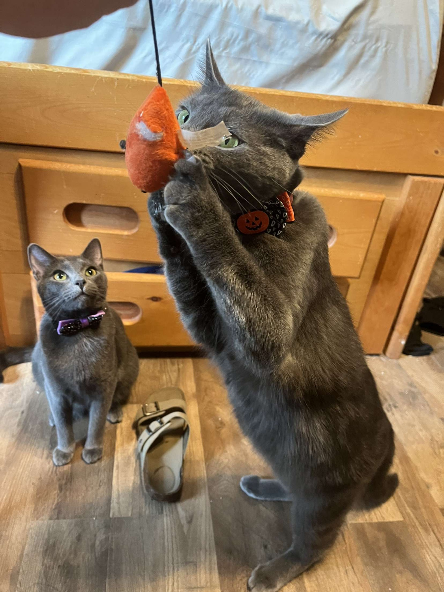

About Me:


 

I'm a 20 year old currently working as a Data Analyst. I was attending university
for a CS degree when I unfortunately had to pause my formal education due to personal matters.
I plan on finishing my degree after I get into the software development field. I am self-taught, and
I have been learning a variety of skills (see below) over the past 9 months while working two jobs
(60-70 hour weeks).
On a more fun note, I love to game, socialize, and I really love my two cats
(click arrows to see some pictures)! Their names are, in order, Toad and Yoshi.
My Projects:
CV App
The CV App was created as practice using React. I learned how to use conditional rendering. This app also gave me practice using/creating stateful React Components. There are two main branches on this project, but they both accomplish the same exact thing on the user side. The difference is I wrote it twice so that one branch would be composed of class components, while the other would be functional components. I did both so that I would be familiar with either should I run across them in a professional setting.
Weather App
The weather app is a simple app made a couple months ago to learn about making API calls and using the returned JSON information to get the information I needed and display it on the page. In this app the user can simply type in the name of their city (EX: Knoxville) and the app will make an API request to https://home.openweathermap.org/. Finally, the app will show the current weather (cloudy, rainy, clear), the current temperature, and the temperature high and low for the day. (Live Preview)
Odin Recipes
This one is mostly just for laughs. This is my first ever webpage made about 9 months ago. Though I mostly put this on my website as a little "ha-ha" moment, It does give reference to how much I've learned while being self-taught and working two jobs. But who knows, maybe this incredible page will give you an idea on a desert for later! (Live Preview)
Instagram Clone
This one is a work in progress. There will be no live preview yet but you can check in on the Github repo to check my progress! This one is one of the bigger "putting everything together projects". I will be implementing everything I've learned to date. This includes HTML best practices, everything js related, and more. This project also uses Firebase as a backend. Using this, I plan to implement Google Auth (sign in/out), CRUD messaging, following/unfollowing other users, seeing a feed of their posts, and more!
Skills:
- HTML5
- CSS3
- JavaScript
- Git
- React
- Asana
- Firebase (working with backend)
- Agile Development Methodologies
- Design principles (SOLID, mobile first)
Contact Me!
Reach out! I'm always looking to make connections. I'm also always down to interview, ask some questions about you, or even just chat! I'll be looking forward to speaking with you.